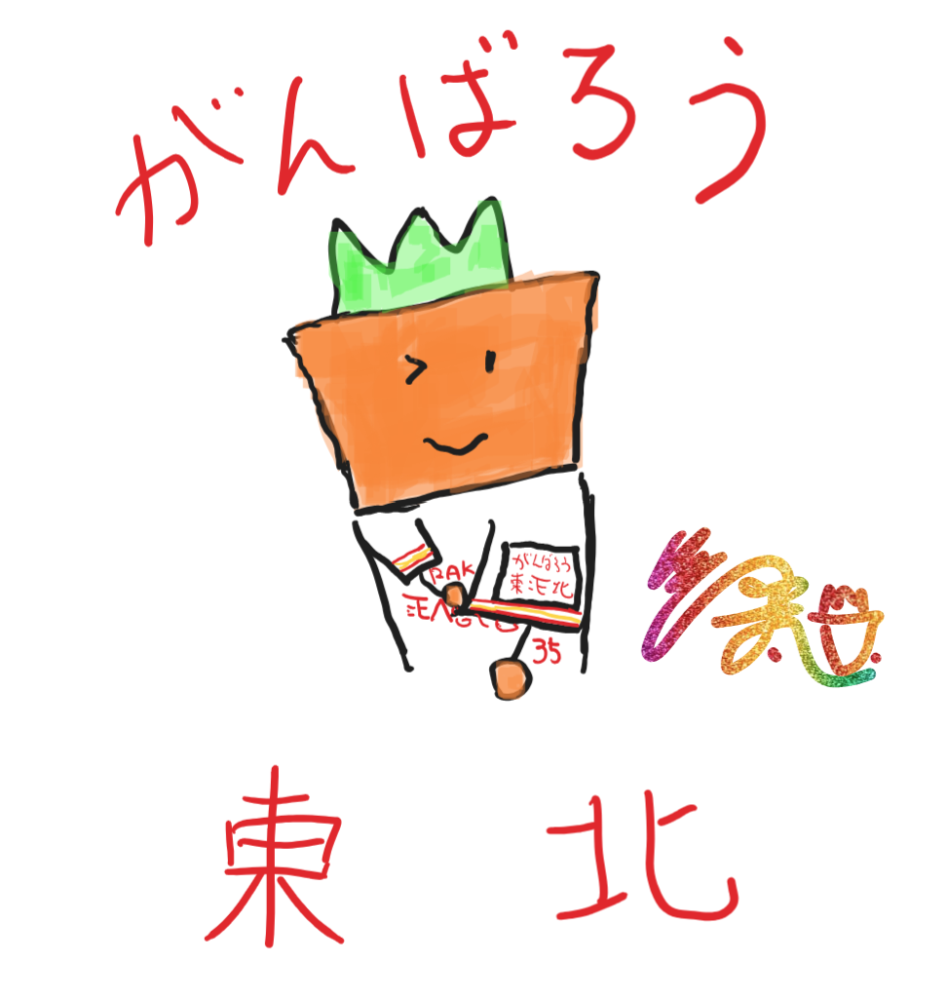

HTMLの基礎学習
・＜h1＞
Hello World
・＜h2＞
Hello World
・＜h3＞
Hello World
・＜h4＞
Hello World
・＜h5＞
Hello World
・＜h6＞
Hello World
・＜p＞
Hello World
・＜b＞
Hello World
・（CSS）font-size
Hello World
・＜ul＞
・＜ol＞
- にんじんくん
- キャベツくん
- トマトさん
・＜table＞
| 出席番号 |
名前 |
| 1 |
にんじんくん |
| 2 |
キャベツくん |
| 3 |
トマトさん |
・＜img＞

・＜a href＞
Google
（おまけ）地図の掲載
（参考文献）
Google Mapをホームページに埋め込む方法を分かりやすく解説！ -初心者のための会社ホームページ作り方講座-
（おまけ）・＜div＞, ＜span＞, position
にんじん